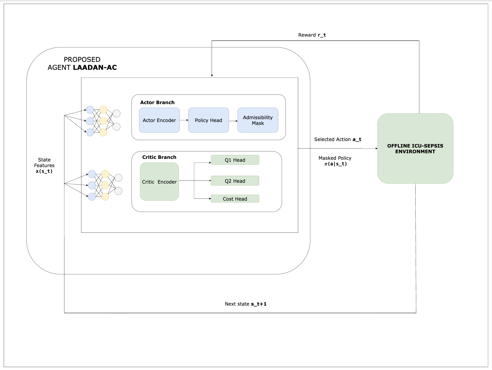
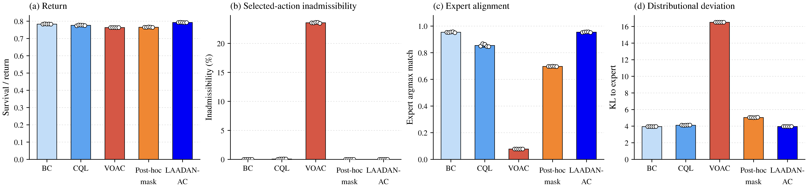
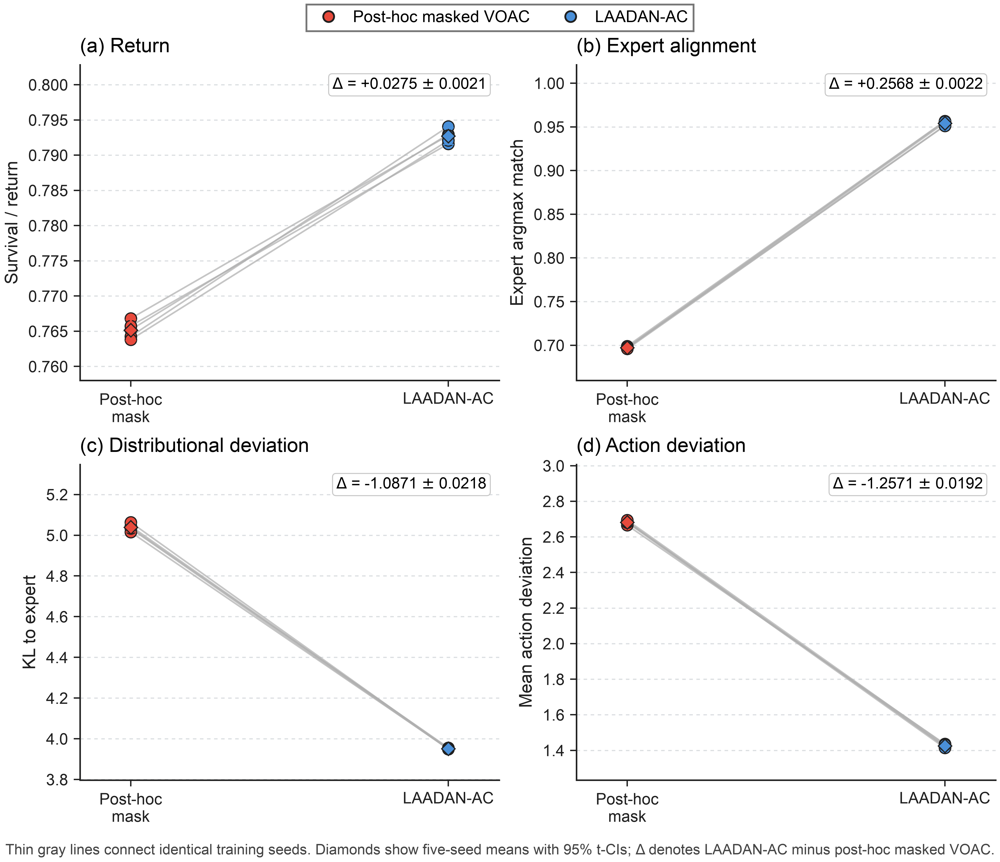
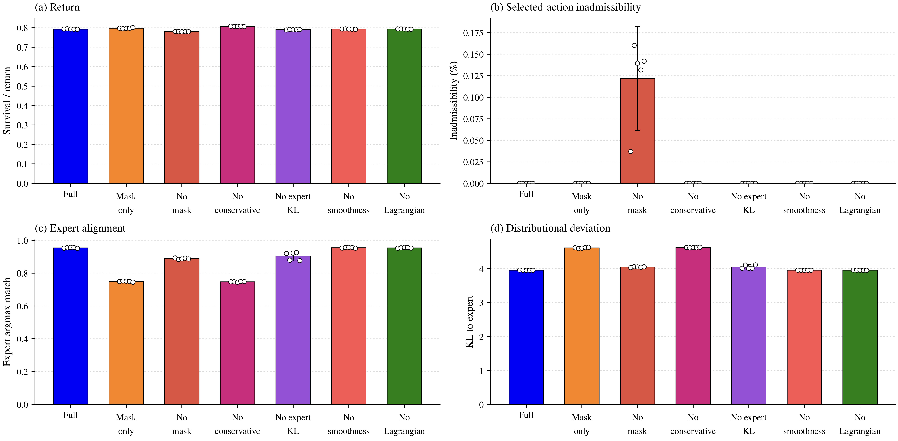
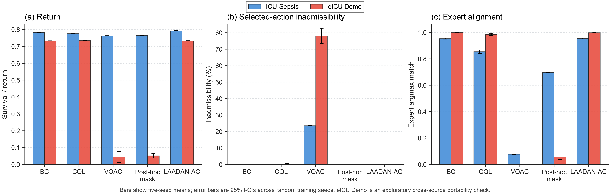
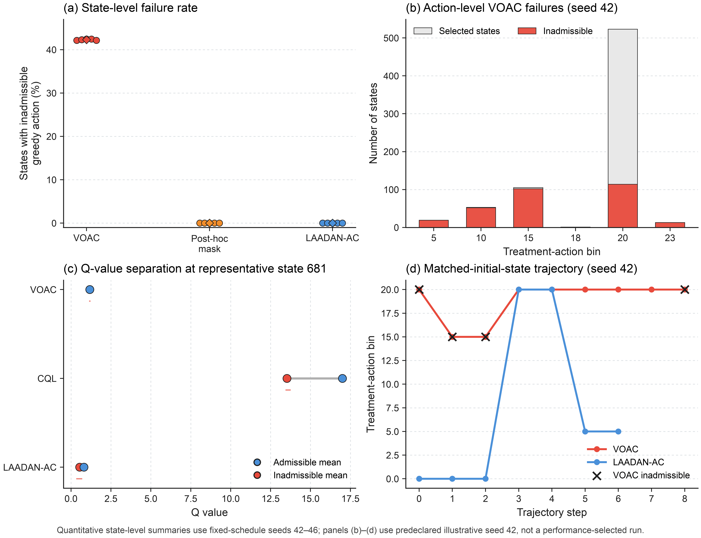
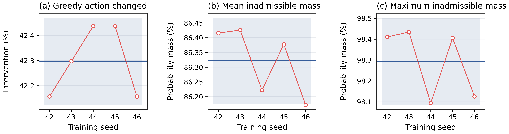
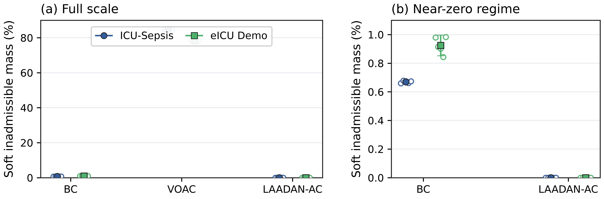
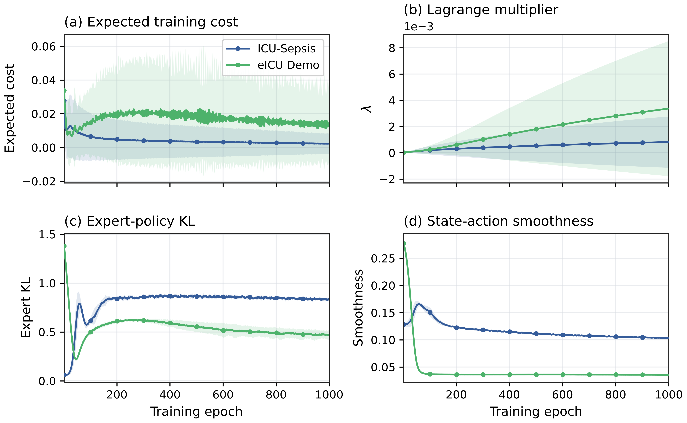

What makes an offline treatment policy reliable? High estimated return alone does not show whether a learned policy respects explicit action constraints or remains aligned with expert behaviour. We study this distinction with Lagrangian Admissibility-Aware Deep Action-Nudging Actor-Critic (LAADAN-AC), which embeds benchmark-defined admissibility directly in an offline actor interface. Using predetermined epoch-1000 checkpoints across five random seeds on ICU-Sepsis, LAADAN-AC achieves 0.7927 ± 0.0012 expected return, 0.0000% selected-action inadmissibility, and 0.9540 ± 0.0032 expert argmax agreement. Against post-hoc masked VOAC, paired evaluation yields +0.0275 ± 0.0021 return and +0.2568 ± 0.0022 expert-agreement differences, although both are admissible after masking. Ablations identify hard masking as the direct feasibility mechanism, while the remaining terms shape the return–alignment operating point. An exploratory eICU-CRD Demo study tests cross-source portability.

LAADAN-AC is an admissibility-constrained offline actor-critic framework for tabular treatment-policy benchmarks. The actor is restricted to benchmark-admissible actions during training and action extraction. Conservative critic regularisation, expert-policy KL, smoothness, and Lagrangian cost pressure then shape behaviour within or around that admissible interface.
(1) ICU-Sepsis Main Comparison

All values are means with 95% t-confidence intervals across five random training seeds using the predetermined epoch-1000 checkpoint. Across the five released policy evaluations, LAADAN-AC combines the highest return with zero benchmark-defined selected-action inadmissibility and expert agreement comparable to Behavior Cloning.

Post-hoc masking and LAADAN-AC both produce zero selected-action inadmissibility after masking, but the paired fixed-schedule comparison separates action-time masking from training under the admissibility interface. Across the same five seeds, LAADAN-AC improves return by 0.0275 ± 0.0021, expert argmax agreement by 0.2568 ± 0.0022, and KL to the benchmark reference distribution by −1.0871 ± 0.0218 relative to post-hoc masked VOAC.

The masking-only actor-critic reaches 0.7974 ± 0.0026 return with zero inadmissibility but 0.7488 ± 0.0035 expert agreement. Removing the conservative critic increases return to 0.8067 ± 0.0009, again with zero inadmissibility, while expert agreement falls to 0.7473 ± 0.0025. The full objective is therefore not a return-maximising configuration: it selects a different return–admissibility–alignment operating point. Removing the action mask produces non-zero inadmissibility, identifying the mask as the direct feasibility mechanism in the reported benchmark.

The constructed eICU-CRD Demo MDP is used as an exploratory portability check. It contains 202 states, 25 actions, and 22-dimensional state features, compared with 716 states, 25 actions, and 47-dimensional features in ICU-Sepsis. On this MDP, LAADAN-AC obtains 0.7329 ± 0.0008 return, zero selected-action inadmissibility, and 0.9984 ± 0.0006 expert argmax agreement. This is an exploratory cross-source study, not external clinical validation.

The quantitative diagnostics use all five fixed epoch-1000 seeds. Qualitative state, Q-value, and trajectory panels use the predeclared illustrative seed 42. The benchmark admissibility signal is a property of the released MDP interface; it is not a clinical safety guarantee or treatment-optimality claim.



These diagnostic views explain the learned policy and optimisation behaviour without changing the pre-specified checkpoint rule used for the reported benchmark results.
LAADAN-AC is a benchmark study of admissibility-aware offline treatment-policy learning. The reported selected-action admissibility is defined by the released benchmark MDP interface and should not be interpreted as prospective clinical safety, treatment optimality, clinician acceptance, or readiness for deployment.
@misc{basak2026laadanac,
author = {Basak, Riya and Helal, Manal},
title = {{LAADAN-AC}: Beyond Survival in Admissible Offline Treatment-Policy Learning},
year = {2026},
month = jun,
url = {https://github.com/AnnyaB/laadan-ac}
}